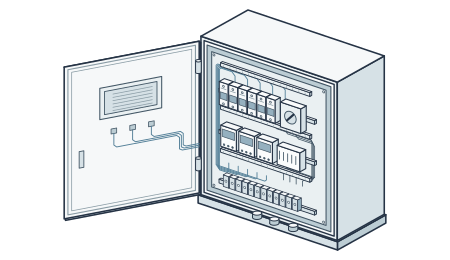

Системы под ключ
Берём на себя вентиляцию, кондиционирование или оба раздела проекта. Подбираем и поставляем оборудование, монтируем, настраиваем и обслуживаем системы. Можно заказать и отдельный этап работ.
Вентиляция
Организуем подачу и удаление воздуха в общественных зданиях и производственных помещениях. Подбираем приточные и вытяжные установки, в том числе системы с рекуперацией тепла.

- Для подбора
- План помещений, их назначение и расчётные расходы воздуха, если они уже определены.
- Что входит
- Подбор и поставка оборудования, монтаж воздуховодов и установок, наладка.
Кондиционирование
Для офисных и торговых помещений подбираем системы комфортного кондиционирования. Для серверных и аппаратных — технологическое охлаждение с учётом тепловой нагрузки оборудования.

- Варианты систем
- Мультизональные и прецизионные кондиционеры, чиллеры и фанкойлы, сплит-системы.
- Для подбора
- Площадь и назначение зон, режим работы, источники тепла и требуемая температура.
Автоматизация климата
Разрабатываем решения для управления климатическим оборудованием. Автоматика отслеживает параметры воздуха и регулирует работу системы при изменении условий в помещении.

- Для проработки
- Перечень установок, параметры для контроля и желаемые режимы работы.
- Предмет расчёта
- Состав оборудования для контроля и регулирования, алгоритмы работы системы.
Монтаж
Устанавливаем вентиляционное и климатическое оборудование, собираем воздуховоды и соединяем элементы системы. При реконструкции учитываем расположение существующих коммуникаций.
- Что прислать
- Рабочие чертежи, спецификацию оборудования и планируемую очерёдность работ.
Пусконаладка
Перед сдачей или после реконструкции проверяем, как работает смонтированная система. Сопоставляем фактические параметры с проектными и регулируем оборудование.
- Для заявки
- Проектные параметры, состав оборудования и сведения о готовности системы к запуску.
Сервис и ремонт
Проводим регламентное обслуживание систем вентиляции и кондиционирования. При неисправности диагностируем оборудование, определяем причину и выполняем ремонт или замену узлов.
- Для диагностики
- Модель установки, описание неисправности, код ошибки или фотография шильдика.
- Для обслуживания
- Перечень оборудования, адрес объекта, режим эксплуатации и история обслуживания.